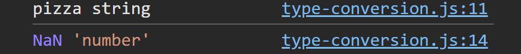
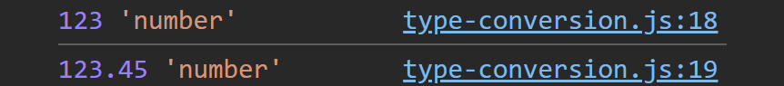
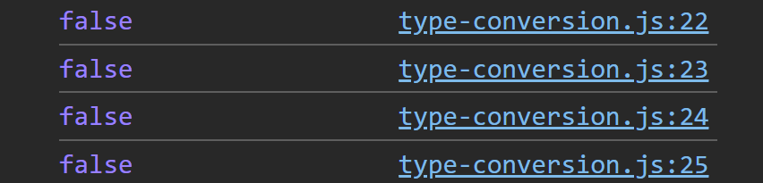
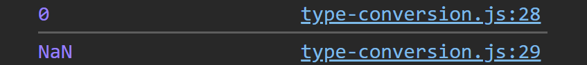
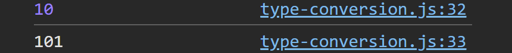

Explore core JavaScript concepts
Start with a number and check its type with typeof:
let battingAvg = 0.333; console.log(typeof battingAvg);

Convert the number to a string:
battingAvg = String(battingAvg); console.log(typeof battingAvg);
Convert the string to a boolean:
battingAvg = Boolean(battingAvg); console.log(typeof battingAvg);
Converting a string to a number that isn't numeric results in NaN:
let food = 'pizza'; console.log(food, typeof food); food = Number(food); console.log(food, typeof food);
Use parseInt() and parseFloat() to extract numbers from strings:
let score = "123.45"; console.log(parseInt(score), typeof parseInt(score)); console.log(parseFloat(score), typeof parseFloat(score));
Falsy values like 0, empty string, null, and undefined convert to false:
console.log(Boolean(0));
console.log(Boolean(""));
console.log(Boolean(null));
console.log(Boolean(undefined));

Converting null gives 0, but undefined gives NaN:
console.log(Number(null)); console.log(Number(undefined));
JavaScript sometimes converts types automatically (implicit conversion):
console.log("5" * 2); // 10
console.log("10" + 1); // "101"

You can also use toString() to convert a number to a string:
let num = 42; console.log(num.toString(), typeof num.toString());